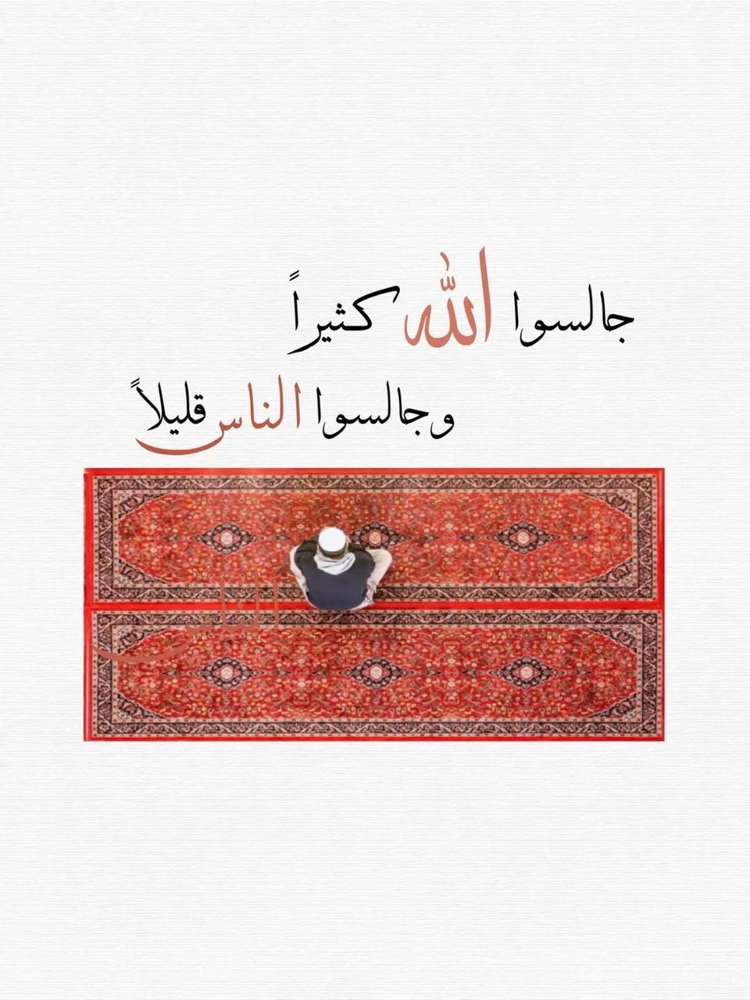

المواقيت محسوبة فلكيًا حسب موقعك وطريقة الحساب، وقد تختلف بدقائق عن التقويم المحلي. تأكد من جهة الإفتاء في بلدك.
الزاوية من الشمال الحقيقي حسب مدينتك المختارة في تبويب الصلاة. بوصلة الهاتف قد تتأثر بالمعادن، فعايرها بحركة رقم 8.
مجموعة مختارة من الصحيح الثابت. المكتبة الكاملة تُضاف بعد مراجعة تخريجها.
كل قسم مأخوذ من الثابت في القرآن والسنة الصحيحة مع مصدره.
البطاقة تُرسم على جهازك من نصوص التطبيق نفسها بلا خوادم. اختر القسم ثم نزّلها أو شاركها.
يفتح الكتيب بتنسيق ورقي جاهز للطباعة؛ اختر «حفظ بتنسيق PDF» من نافذة الطباعة لتنزيله ملفًا.
مجموعة مختارة من القرآن ومن الصحيح الثابت في السنة، مع المصدر.
النص بالرسم العثماني والتفسير من التفسير الميسّر. يحتاج هذا القسم اتصالًا بالإنترنت.
دليل الألوان: رمادي: لا يُنطق (همزة وصل/لام شمسية/ساكن) • أزرق فاتح: مد طبيعي • أزرق: مد فرعي (متصل ومنفصل ولازم) • أحمر: قلقلة • برتقالي: غنة • بنفسجي: إخفاء • سماوي: إقلاب • أخضر: إدغام. التلوين على النص العثماني نفسه، ويحتاج اتصالًا بالإنترنت عند أول تحميل لكل سورة.
المصحف المطبوع بصفحاته (مصحف المدينة) وقراءة ورش عن نافع غير مضافين في هذه النسخة. توجد مصادر موثوقة لهما (مجمع الملك فهد لطباعة المصحف الشريف، ومكتبة QUL لنص ورش)، لكن إدماجهما يحتاج مراجعة الخط والترخيص أولًا.